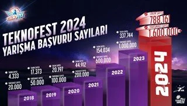

|  | TEKNOFEST rekor kırmaya devam ediyor |
| TEKNOFEST Havacılık, Uzay ve Teknoloji Festivali, 2024 yılında da bir rekora imza attı. TEKNOFEST 2024'te 1.630.000 yarışmacı geleceğin teknolojilerini üretmek için yarışacak. |
 |
Borsa güne yükselişle başladı |
| Borsa İstanbul'da BIST 100 endeksi, güne yüzde 0,30 yükselişle 8.834,01 puandan başladı. |